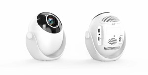
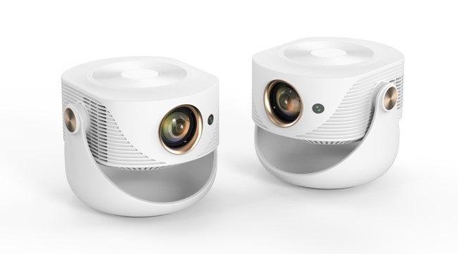
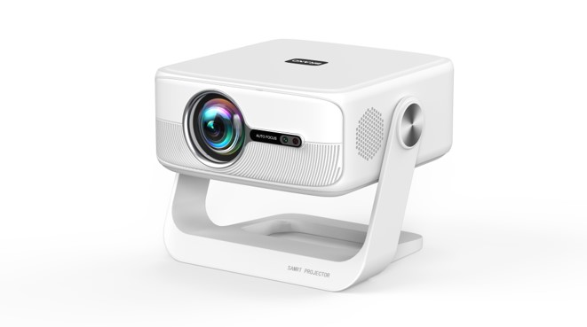
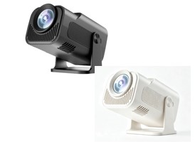
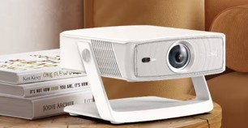
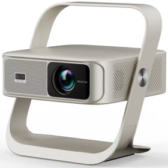
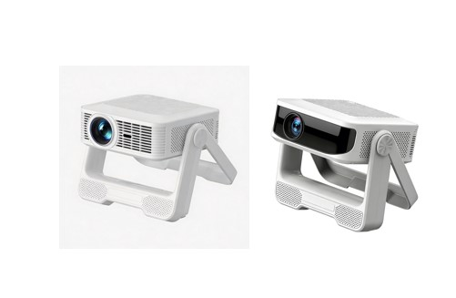
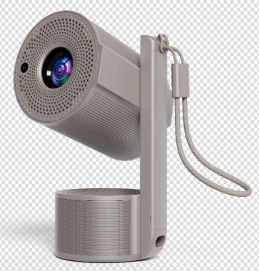
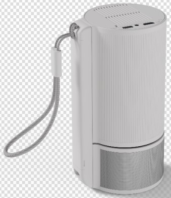
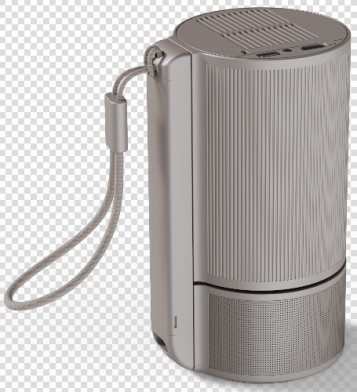

展示多款优质投影仪 / Presenting multiple high-quality projectors suitable

Q3 智能投影仪采用 2.1 英寸 LCD 显示技术与独立开放式光机，并搭配 LED 光源，光源寿命约 30000 小时；1000:1 的对比度与 16.7 百万全真彩显示，让画面色彩更饱满。整机支持 16:9 和 4:3 画面比例，可等比例缩放，支持 40–120 英寸投影尺寸与 1.15–3.4 米投射距离，具备上下梯形自动校正，并支持正装正投、正装背投、吊装正投、吊装背投四种投影方式。硬件搭载全志 H723 四核 A53/G31 处理器，配备 1GB DDR3 内存与 8GB 存储，运行 Android 14 系统；支持 WiFi 6（2.4G+5G）、蓝牙 5.4（可连接手机、蓝牙音响、鼠标、手柄等）、安卓同屏与投屏功能；系统支持英语等多国语言，接口包括 HDMI、USB 和耳机，并可选用红外遥控或蓝牙遥控。内置 4Ω3W 音响，整机功率 37W，支持 AC100–240V、50/60Hz 1.5A 宽电压输入，适合家庭影音、卧室娱乐及小型办公场景。
The Q3 smart projector features a 2.1-inch LCD display, an independent open optical engine and an LED light source rated for approximately 30,000 hours. A 1000:1 contrast ratio and 16.7 million true colors deliver fuller, more vivid images. It supports 16:9 and 4:3 aspect ratios with proportional scaling, 40–120 inch projection sizes and a 1.15–3.4 m throw distance, and offers auto vertical keystone correction plus four projection modes: front tabletop, rear tabletop, front ceiling and rear ceiling. Inside, an Allwinner H723 quad-core A53/G31 processor is paired with 1 GB DDR3 RAM and 8 GB storage; Android 14 brings WiFi 6 (2.4G+5G), Bluetooth 5.4 (for phones, Bluetooth speakers, mice and gamepads), Android screen mirroring and casting, multi-language support, HDMI/USB/headphone ports, and optional IR or Bluetooth remote control. A built-in 4Ω 3W speaker, 37 W power consumption and AC 100–240 V, 50/60 Hz, 1.5 A input make the Q3 suitable for home theater, bedroom entertainment and small-office use.

Q1 智能投影仪采用 2.1 英寸 LCD 显示技术与独立开放式光机，搭配 LED 光源，光源寿命约 30000 小时；1000:1 对比度与 16.7 百万全真彩显示，画面色彩更饱满。它支持 16:9/4:3 画面比例，并可按比例缩放，可投射 40–120 英寸画面，投射距离为 1.15–3.4 米；具备上下梯形自动校正，并支持正装正投、正装背投、吊装正投、吊装背投四种投影方式。硬件搭载全志 H723 四核 A53/G31 处理器，配备 1GB DDR3 内存与 8GB 存储，运行 Android 14 系统；支持 WiFi 6（2.4G+5G）、蓝牙 5.4（可连接手机、蓝牙音响、鼠标、手柄等）、安卓同屏与投屏功能，系统支持英语等多国语言，接口包括 HDMI、USB 和耳机，并可选用红外/蓝牙遥控。内置 4Ω3W 音响，整机功率 37W，支持 AC100–240V、50/60Hz 1.5A 宽电压输入，适合家庭影音、卧室娱乐及小型办公场景。
The Q1 smart projector features a 2.1-inch LCD display and an independent open optical engine with an LED light source rated for approximately 30,000 hours. A 1000:1 contrast ratio and 16.7 million true colors deliver fuller, more vivid images. It supports 16:9 and 4:3 aspect ratios with proportional scaling, projects 40–120 inch images at a 1.15–3.4 m distance, and offers auto vertical keystone correction plus four projection modes: front tabletop, rear tabletop, front ceiling and rear ceiling. Inside, an Allwinner H723 quad-core A53/G31 processor is paired with 1 GB DDR3 RAM and 8 GB storage; Android 14 brings WiFi 6 (2.4G+5G), Bluetooth 5.4 (for phones, Bluetooth speakers, mice and gamepads), Android screen mirroring and casting, multi-language support, HDMI/USB/headphone ports, and optional IR or Bluetooth remote control. A built-in 4Ω 3W speaker, 37 W power consumption and AC 100–240 V, 50/60 Hz, 1.5 A input make the Q1 suitable for home theater, bedroom entertainment and small-office use.

Q5 智能投影仪采用 3.12 英寸 LCD 显示技术与独立开放式光机，搭配 LED 光源，光源寿命约 30000 小时；1000:1 对比度与 16.7 百万全真彩显示，画面色彩更饱满。它支持 16:9/4:3 画面比例，并可按比例缩放，可投射 40–200 英寸画面，投射距离 1.15–3.4 米；具备自动梯形校正，并支持正装正投、正装背投、吊装正投、吊装背投四种投影方式。硬件搭载全志 H723 四核 A53/G31 处理器，配备 1GB DDR3 内存与 8GB 存储，运行 Android 14 系统；支持 WiFi 6（2.4G+5G）、蓝牙 5.4（可连接手机、蓝牙音响、鼠标、手柄等）、安卓同屏与投屏功能，系统支持英语等多国语言，接口包括 HDMI、USB 和耳机，并可选用红外/蓝牙遥控。内置 4Ω5W 音响，整机功率 60W，支持 AC100–240V、50/60Hz 1.5A 宽电压输入，适合家庭影院、客厅娱乐及小型办公场景。
The Q5 smart projector features a 3.12-inch LCD display and an independent open optical engine with an LED light source rated for approximately 30,000 hours. A 1000:1 contrast ratio and 16.7 million true colors deliver fuller, more vivid images. It supports 16:9 and 4:3 aspect ratios with proportional scaling, projects 40–200 inch images at a 1.15–3.4 m distance, and offers automatic keystone correction plus four projection modes: front tabletop, rear tabletop, front ceiling and rear ceiling. Inside, an Allwinner H723 quad-core A53/G31 processor is paired with 1 GB DDR3 RAM and 8 GB storage; Android 14 brings WiFi 6 (2.4G+5G), Bluetooth 5.4 (for phones, Bluetooth speakers, mice and gamepads), Android screen mirroring and casting, multi-language support, HDMI/USB/headphone ports, and optional IR or Bluetooth remote control. A built-in 4Ω 5W speaker, 60 W power consumption and AC 100–240 V, 50/60 Hz, 1.5 A input make the Q5 suitable for home theater, living-room entertainment and small-office use.

320mini 智能投影仪配备 2.1 英寸 LCD 显示面板与独立开放式光机，采用 LED 光源，寿命约 30000 小时；1000:1 对比度与 16.7 百万全真彩显示，可带来饱满的色彩表现。它支持 16:9/4:3 两种画面比例（可等比例缩放），投射尺寸覆盖 40–120 英寸，1.15–3.4 米即可投出大屏；上下梯形自动校正配合正装正投、正装背投、吊装正投、吊装背投四种安装方式，摆放更灵活。核心硬件为全志 H723 四核 A53/G31 处理器，搭配 1GB DDR3 内存与 8GB 存储，运行 Android 14 系统；支持 WiFi 6（2.4G+5G）、蓝牙 5.4（可连接手机、蓝牙音响、鼠标、手柄等）、安卓同屏与投屏；系统内置英语等多国语言，并提供 HDMI、USB、耳机接口及可选的红外/蓝牙遥控。内置 4Ω3W 音响，整机功率 37W，支持 AC100–240V、50/60Hz 1.5A 输入，适用于家庭影音、卧室娱乐和小型办公场景。
The 320mini smart projector combines a 2.1-inch LCD panel, an independent open optical engine and an LED light source rated for about 30,000 hours. A 1000:1 contrast ratio and 16.7 million true colors ensure rich, vivid images. It handles 16:9 and 4:3 aspect ratios with proportional scaling, casts 40–120 inch pictures from 1.15–3.4 m away, and offers auto vertical keystone correction with four placement modes: front/rear tabletop and front/rear ceiling. An Allwinner H723 quad-core A53/G31 processor pairs with 1 GB DDR3 RAM and 8 GB storage, and the system runs Android 14 with WiFi 6 (2.4G+5G), Bluetooth 5.4 for phones, speakers, mice and gamepads, Android mirroring and casting, multi-language support, HDMI/USB/headphone ports, and an optional IR or Bluetooth remote. The built-in 4Ω 3W speaker, 37 W power draw and AC 100–240 V, 50/60 Hz, 1.5 A input suit home entertainment, bedroom viewing and small-office use.

B5 智能投影仪采用 LCD 显示技术与 LED 光源，配备镀蓝膜的玻璃镜片镜头，画面均匀度为 68%，对比度为 1500:1，支持 16:9 显示比例、60Hz 刷新率及红蓝 3D。它的投射比为 1.32–1.35:1，投射 100 英寸画面约需 3 米；支持电子梯形校正与自动梯形校正，并可按正装或吊装方式安装。硬件搭载 H136 处理器，配备 1GB 内存与 8GB 存储，运行基于 Android 的智像系统；支持双频 WiFi（2.4G/5G）、蓝牙 5.2 与无线同屏，提供 HDMI、USB 和耳机输出接口，遥控器支持红外或蓝牙连接及语音控制。内置 10W/4Ω 音腔喇叭，整机功耗约 86W，运行噪音 ≤55dB，支持 AC100–240V 宽电压输入；机身采用白色 ABS 材质，尺寸为 242.6×240.8×98.8mm，净重 2.7kg，适合家庭影音、卧室娱乐及日常演示场景。
The B5 smart projector uses LCD display technology and an LED light source, with a blue-coated glass lens, 68% uniformity and a 1500:1 contrast ratio. It supports a 16:9 aspect ratio, a 60Hz refresh rate and red-blue 3D. Its 1.32–1.35:1 throw ratio projects a 100-inch image from about 3 m, and both electronic and automatic keystone correction help keep the picture aligned in tabletop or ceiling installations. An H136 processor runs the Android-based ZhiXiang system with 1GB RAM and 8GB storage, while dual-band WiFi (2.4G/5G), Bluetooth 5.2 and wireless screen mirroring handle connectivity. HDMI, USB and headphone outputs are provided, and the remote supports IR/Bluetooth and voice control. A built-in 10W/4Ω speaker, approximately 86W power consumption, an operating noise level of ≤55dB and AC 100–240V input complete the package, which measures 242.6×240.8×98.8mm, weighs 2.7kg and comes in a white ABS body — suitable for home entertainment, bedroom viewing and everyday presentations.

Z9 智能投影仪采用 LCD 显示技术与 LED 光源，配备镀膜镜头，光源寿命约 40000 小时，对比度 1000:1；推荐画面尺寸为 55–100 英寸，投影距离 1.2–3.5 米，并具备 ±30° 梯形校正、四点梯形校正与侧投功能。整机配备电动云台，支持白布、白墙、天花板等投影模式，画面比例为 16:9/4:3；支持最高 4K 视频解码，兼容 MPEG、MP4、MOV、MKV 等常见视频格式，以及 MP3、FLAC、APE 等音频格式和 JPG、PNG 等图片格式，并可通过 USB 扩展存储。系统运行 Android 11，采用海思 352 芯片与 A73 核心，配备 1GB 运行内存和 8GB 存储；支持 2.4G/5G 双频 WiFi、蓝牙 6.1、安卓/iOS 无线同屏及中英文界面（可选），接口包括 USB、HDMI 和耳机输出，遥控方式为红外并可选语音控制。内置 4Ω5W 扬声器，整机功耗 58W，支持 AC100–240V、50/60Hz 输入，金色机身适合家庭影音、卧室娱乐及日常演示场景。
The Z9 smart projector uses LCD display technology and an LED light source rated for about 40,000 hours, with a 1000:1 contrast ratio and a coated lens. It offers a recommended screen size of 55–100 inches at a projection distance of 1.2–3.5 m, and supports ±30° keystone correction, 4-point keystone correction and side projection. An electric gimbal and white-cloth, white-wall and ceiling projection modes add flexibility, while the 16:9/4:3 aspect ratio suits different content. It decodes video up to 4K and handles common formats such as MPEG, MP4, MOV and MKV, along with MP3, FLAC and APE audio and JPG/PNG images, plus USB storage expansion. Android 11 runs on a HiSilicon 352 chipset with an A73 core, paired with 1GB RAM and 8GB storage; connectivity includes dual-band 2.4G/5G WiFi, Bluetooth 6.1, Android/iOS wireless screen mirroring and Chinese/English menus (optional), with USB, HDMI and headphone ports. An IR remote with optional voice control, a built-in 4Ω5W speaker, 58W power consumption and AC 100–240V, 50/60Hz input round out the package, which comes in a golden body and suits home entertainment, bedroom viewing and everyday presentations.

ES6 便携投影仪采用 LCD 显示技术和 LED 光源，色温 7000K，光源寿命约 30000 小时，对比度 1500:1，画面均匀度 80%。它支持 30–150 英寸投影，最佳画面尺寸为 60–90 英寸，投射比 1.4，有效投影距离 1–3 米；具备电子梯形校正，并支持吊投、正投、背投三种投影方式。整机搭载 RK3326/H713 主控，支持双频 WiFi（2.4G/5G），配备 USB 2.0、HDMI 2.0 与 3.5mm 音频输出接口，并标配蓝牙遥控器与 1.5 米电源线；可播放 MP4、MKV、AVI、FLV 等视频，MP3、WMA、FLAC、APE 等音频以及 JPG、PNG、BMP、GIF 等图片。内置 4Ω5W BOX 喇叭，整机功率 ≤80W，支持 AC100–250V、50/60Hz 输入；机身尺寸 260×240×80mm，净重 1.12kg，便携设计适合家庭影音、卧室娱乐及便携演示场景。
The ES6 portable projector uses LCD display technology and an LED light source with a 7000K color temperature, a lifespan of about 30,000 hours, a 1500:1 contrast ratio and 80% luminance uniformity. It supports 30–150 inch projection with an optimum size of 60–90 inches, a 1.4 throw ratio and an effective projection distance of 1–3 m. Electronic keystone correction and ceiling, front and rear projection modes add installation flexibility. An RK3326/H713 chipset powers the projector, with dual-band WiFi (2.4G/5G), USB 2.0, HDMI 2.0 and a 3.5mm audio output; a Bluetooth remote and 1.5m power cable are included. It plays MP4, MKV, AVI and FLV video, MP3, WMA, FLAC and APE audio, and JPG, PNG, BMP and GIF images. A built-in 4Ω5W BOX speaker, ≤80W power consumption and AC 100–250V, 50/60Hz input complete the package, which measures 260×240×80mm and weighs 1.12kg — a portable design for home entertainment, bedroom viewing and portable presentations.



PL5 便携投影仪采用 LCD 显示技术与 LED 光源，光源寿命约 30000 小时，对比度 2000:1；投射比为 0.9:1，投影距离 0.9–2.5 米，支持 50–180 英寸投影尺寸，画面比例为 4:3/16:9，具备 ±15° 垂直梯形校正与自动上下梯形校正，并提供正装正投、正装背投、吊装正投、吊装背投四种投影方式。硬件搭载海思 252 芯片与 IMG GE8300 GPU（660MHz），配备 1GB 运行内存和 8GB 存储，运行 Android 11 系统；支持 2.4G/5G 双频 WiFi、蓝牙与红外+蓝牙遥控，接口包括 USB、HDMI 和 3.5mm 音频输出。内置 4Ω3W SRS 音响，1 米处噪音约 30dB，整机功耗 45W，支持 AC90–240V 输入及 PD3.0，并内置 15600mAh 电池；机身尺寸 107×126×213mm，仅重 0.6kg，颜色可选定制，支持 1/4 英寸三脚架（可选），通过 CE、FCC、RoHS、CCC 认证，适合家庭影音、卧室娱乐及移动演示场景。
The PL5 portable projector uses LCD display technology and an LED light source rated for about 30,000 hours, with a 2000:1 contrast ratio. A 0.9:1 short-throw ratio, a 0.9–2.5 m projection distance and a 50–180 inch projection size support flexible placement, along with 4:3/16:9 aspect ratios, ±15° vertical keystone correction, automatic vertical keystone adjustment and four projection modes: front tabletop, rear tabletop, front ceiling and rear ceiling. A HiSilicon 252 chipset with an IMG GE8300 GPU at 660MHz runs Android 11 with 1GB RAM and 8GB storage, while connectivity includes dual-band 2.4G/5G WiFi, Bluetooth, an IR/Bluetooth remote, USB, HDMI and a 3.5mm audio output. A built-in 4Ω3W SRS speaker, about 30dB noise at one meter, 45W power consumption, AC 90–240V input with PD3.0 and a 15600mAh battery complete the package, which measures 107×126×213mm, weighs just 0.6kg and offers color customization plus an optional 1/4-inch tripod mount; CE, FCC, RoHS and CCC certified, it suits home entertainment, bedroom viewing and mobile presentations.